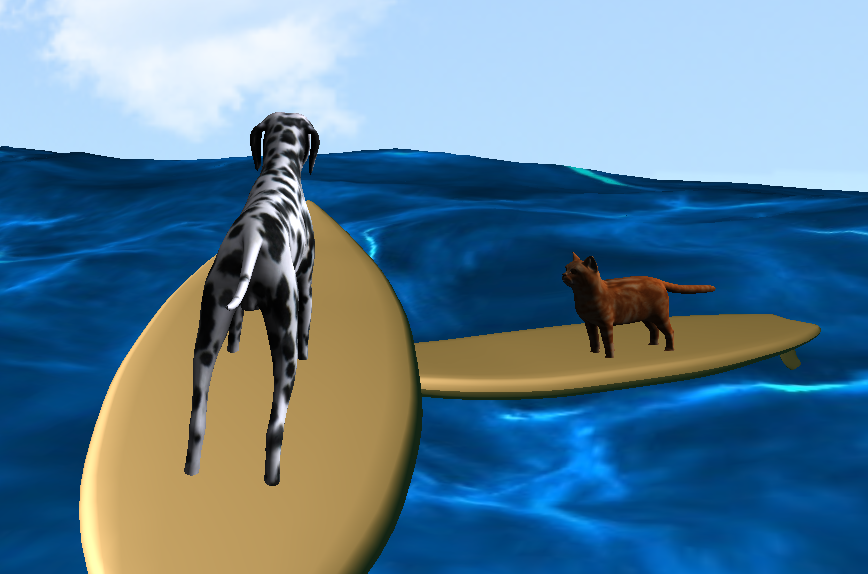
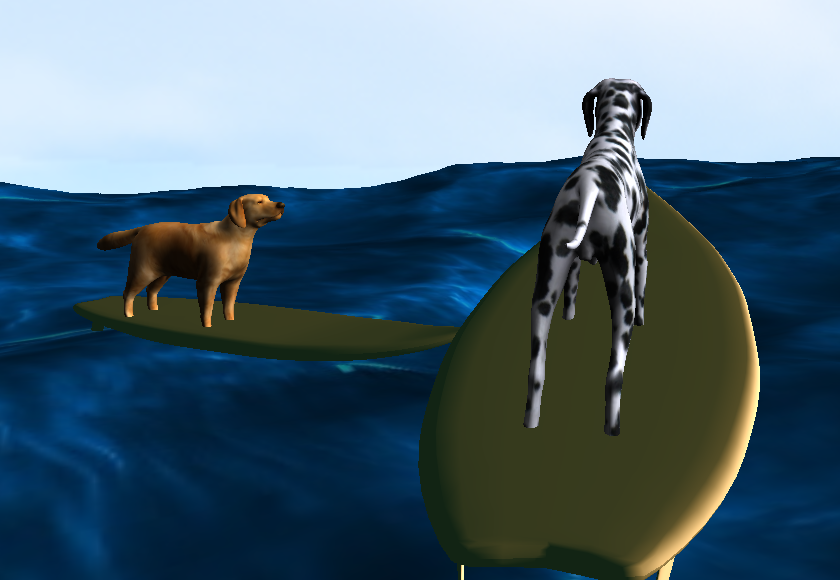
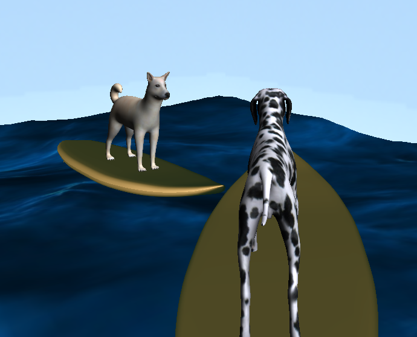

Goal
To create a game in the first-person point of view.
Description
Doogy debris is an interactive game where the user takes on the perspective of a dog on a surfboard. The user then moves around the ocean using the WASD keys and two finger scrolling to collect water bottles where one bottle equals one point. There will always be 5 bottles present in the water.
Lessons I've Learned
- It is difficult to have an object rotate 360 degrees using arccos.
- Creating realistic water is difficult using only a texture map and lighting
- Textures must be a power of two in size.
- Order of transformation is extremely important.
Key Graphics Technologies
- I created a 7x7 grid on the x & z-axis of the ocean. In each grid I calculated the average y-height of each vertex. So when the dog is on a certain grid in the ocean, the dog's height will change to that average y-height. This is so the dog can be seen at all time and is not under the water obj.
- Collision detection between a point and AABB
- Generating 5 water bottles randomly in the world at all times
- Having the camera follow the dog at all time including when it rotates
- I utilized arccos to find the angle between an initial view vector and the current view vector. I then used that angle to rotate the dog about the y-axis of the camera.
External Resources
- All models were downloaded royalty-free from online sources such as turbosquid.
- This site helped me understand collision detection.
Knowledge Deepened
- Hierarchical modeling
- Displayed in the sun
- Having the user follow the dog on a surfboard required this
- Lighting
- Used a point light to brighten the entire world
- Used another point light that the sun uses to illuminate the area that the sun is above
- Texture Mapping
- Mapping images to objects (dog, ocean, skybox)
- Shading
- The sun, textured objects, and surfboard all have different shading by manipulating diffusion, specular, and ambience values
Score displays on console.
Dog's height changes based on grid location.

Dog with cat best friend.

Dog with dog best friend.

Dog with dog best friend #2.